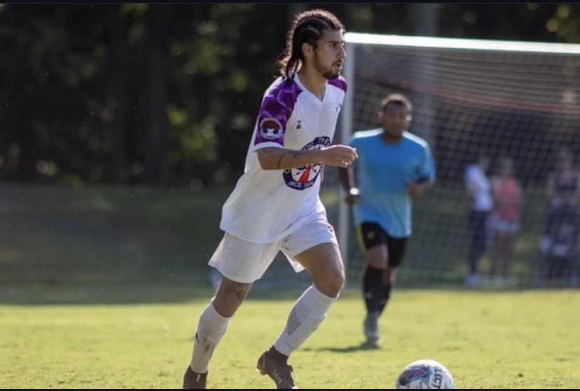

Welcome to Soccer Enthusiast
Here we talk about the beauty of soccer and my experience with the sport. You do not have to just play soccer to be involved, and that is what is so great about the sport.

About Us
My passion for soccer was ignited by my father, who was a professional player for the USA team, setting high expectations for me from a young age. Both of my sisters also excelled in sports; one played college soccer while the other won a marathon at an impressively young age. My soccer journey includes playing at various competitive levels, including high school varsity, club teams, Olympic Development Programs (ODP), college, and semi-professional leagues.

Soccer Schedule
The best times to watch and play soccer can vary depending on personal preferences and local climate conditions. Generally, soccer matches are popular during the late spring, summer, and early fall when the weather is conducive to playing and watching outdoor sports. In Europe, the soccer season typically runs from August to May with peak viewing times on weekends and weekday evenings to accommodate work schedules. For playing soccer, mornings or late afternoons are ideal as they avoid the peak sun hours, reducing the risk of overheating and dehydration. For spectators, prime times are usually during major tournaments like the FIFA World Cup, UEFA Champions League, and national league games, where matches are often scheduled on weekends or midweek evenings. In regions with harsh winters, indoor leagues offer an alternative, with games played throughout the year. Watching soccer also peaks during these tournaments, with fans tuning in from all over the world at various times depending on their time zone.

Best Locations
Top places to play or watch soccer.
- Barcelona, Spain - Home to Camp Nou, the largest stadium in Europe, and the legendary FC Barcelona. Watching a match here is a pilgrimage for many soccer fans.
- Buenos Aires, Argentina - Known for its passionate soccer culture. The city is home to historic clubs like Boca Juniors and River Plate, with their iconic stadiums La Bombonera and El Monumental.
- Milan, Italy - The San Siro Stadium hosts two of Italy's biggest clubs, AC Milan and Inter Milan. It is an iconic venue in European soccer.
- Manchester, England - Home to Manchester United's Old Trafford and Manchester City's Etihad Stadium, offering top-tier Premier League soccer.

How To Play Soccer
Playing soccer involves both individual skills and team tactics, but the basic objective is to score more goals than the opponent by getting the ball into their net. A typical soccer match starts with two teams of eleven players each, including a goalkeeper. The game is played on a rectangular field with a goal at each end. Players use their feet, heads, and bodies (but not their hands or arms, except for the goalkeeper within their penalty area) to control and advance the ball. The key skills required include dribbling, passing, shooting, and defending. Players must also understand positioning to effectively support their team and cover opponents. Matches usually consist of two 45-minute halves, with extra time added for stoppages. The rules are overseen by a referee, with assistance from sideline officials. Training often involves drills focusing on techniques, fitness, strategy, and teamwork. Whether playing casually in a local park or competitively in a league, the essentials of soccer revolve around skill development, understanding the rules, and enjoying the spirit of the game.
Why Soccer?
The reasons why soccer is the world's most popular sport.
- Accessibility and Simplicity: Soccer can be played anywhere with minimal equipment. All you need is a ball and some space to play
- Global Appeal: Soccer has a universal appeal that transcends national and cultural boundaries. The simplicity of the game and its ability to adapt to any environment help it to be embraced by diverse communities worldwide.
- Affordability: Unlike many sports, soccer does not require expensive gear or facilities. This makes it accessible to people from all economic backgrounds, which is particularly important in less affluent countries.
AI Prompts
This section details the AI-generated prompts used to create content on this site:
- CSS Prompt: "Use an embedded stylesheet since this is all on one page. Make sure the styling is nice and follows the CRAP principles, No times new roman, generic blue underlined links, no white background, no black text, you get it."
- JavaScript Prompt: "Research and find a solution using CSS and/or JavaScript that hides all sections except the one you have clicked."